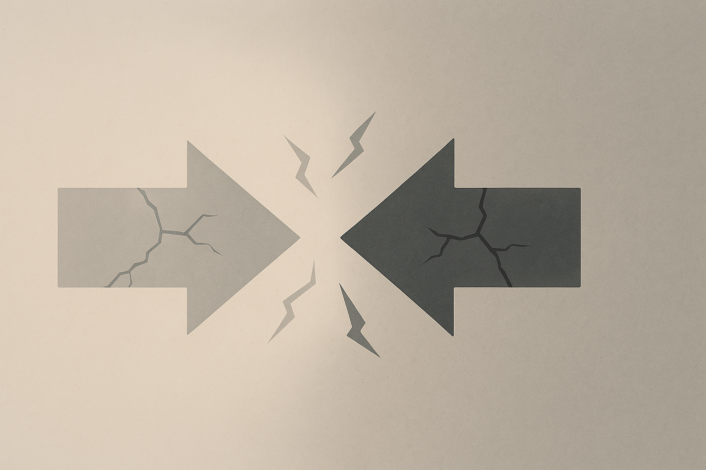

Роль еліти та інтелігенції в сучасному світі
Вступ: Актуальність теми
У сучасному світі, що швидко змінюється, роль провідних верств суспільства – еліти та інтелігенції – набуває особливого значення. Їхній вплив на формування цінностей, напрямів розвитку та вирішення глобальних викликів є визначальним. Розуміння сутності, ознак та протиріч цих соціальних груп дозволяє глибше осмислити динаміку суспільних процесів, що є ключовим для навігації у складному сьогоденні.
Феномен інтелігенції
Поняття інтелігенції
Історично: Термін виник у XIX столітті для позначення освіченого прошарку, що прагнув до соціальних змін.
Класично: Люди розумової праці з високим рівнем освіти, моральними принципами та активною громадянською позицією.
Сучасно: Поняття еволюціонує, включаючи не лише освічених, але й творчих особистостей, які формують культурний та інтелектуальний ландшафт.
Ключові ознаки
- 🎓 Освіченість та ерудиція: Глибокі знання у різних сферах.
- 🤔 Критичне мислення: Здатність до незалежного аналізу.
- ⚖️ Моральна відповідальність: Відчуття обов'язку перед суспільством.
- 💡 Творчий потенціал: Генерація нових ідей та цінностей.
- 🗣️ Активна громадянська позиція: Вплив на громадську думку.
Внутрішні протиріччя
Інтелігенція часто існує у стані внутрішнього конфлікту між ідеалами та реальністю, особистою свободою та суспільним обов'язком, що іноді призводить до ізольованості від народу та проблем з адаптацією до швидких змін у світі.
Л.В. Теліженко підкреслює, що інтелігенція є носієм та транслятором цінностей, формує критичну свідомість суспільства, генерує нові ідеї для прогресу та займається просвітництвом, що є фундаментом для розвитку громадянського суспільства.
О.В. Бондаренко розглядає українську інтелігенцію як унікальний історичний феномен, що був носієм національної ідеї та зберігачем культури в умовах бездержавності. Характерними рисами є жертовність та місія соціального лідерства.
Поняття та типи еліти
Еліта – це відносно невелика, привілейована група, що займає провідні позиції в суспільстві та має значний вплив на прийняття рішень.
Політична
Економічна
Культурна
Інтелектуальна
Військова
Взаємозв'язок інтелігенції та еліти
перетинання
Інтелігенція та еліта не є тотожними поняттями, хоча їхні сфери можуть перетинатися. Інтелігенція, як носій моральних цінностей, може формувати "здорову" еліту, критикувати її дії та генерувати ідеї для розвитку суспільства. В той же час, можливі й конфлікти, коли еліта відходить від суспільних інтересів.
Виклики та перспективи
Сучасні виклики
- 🌐 Глобалізація та інформаційні війни
- 📉 Криза цінностей та популізм
- 🚀 Технологічний прогрес
- ↔️ Соціальна поляризація
Перспективи та завдання
- 🧭 Відновлення морального лідерства
- ✍️ Формування нових об'єднуючих смислів
- 📚 Просвітництво та поширення знань
- 🤝 Посилення відповідальності еліти
Висновки
Еліта та інтелігенція є ключовими складовими суспільства. Інтелігенція виступає як моральний компас і генератор ідей, що є фундаментом для формування "здорової" еліти. У свою чергу, відповідальна еліта, що спирається на інтелектуальний потенціал, здатна вести суспільство до сталого розвитку. Взаємодія і відповідальність цих двох груп є критично важливими для подолання сучасних криз.
Джерела
- Теліженко Л. В. Роль інтелігенції у формуванні громадянського суспільства // Society and universum sciences: dynamics and development: Collective Scientific Monograph (1stedition). Doren V.(ed.). Dallas, USA: Primedia eLaunch LL. 2022. 100 p. Pp. 13-37. URL: http://surl.li/fxtra
- Бондаренко О.В. Українська інтелігенція як феномен вітчизняної історії: погляд сучасника. Культура народов причерноморья. 2008. №67 (134).